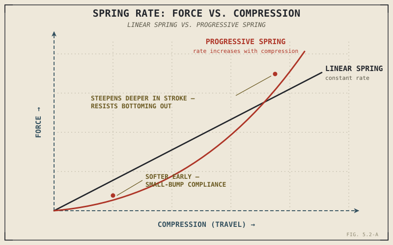

A spring that's too soft lets a motorcycle wallow through its travel and slam into the end stop over a hard landing. A spring that's too stiff skips lightly over the exact small bumps a tyre needs to track to keep generating grip. Neither failure is really about strength — a stiffer spring isn't a stronger, better spring, and a softer one isn't a weaker, worse one. Spring rate is a tuning choice with real costs on both sides, and this chapter is about understanding exactly what that choice controls.
Chapter 5.1 introduced the spring only by name: the component that stores energy as the wheel moves up over a bump and returns it as the wheel moves back down. This chapter opens that up properly — what spring rate actually means, and why picking the right one is nowhere near as simple as "stiffer for performance, softer for comfort."
Force In, Proportional to Distance Compressed
A spring's behaviour follows a simple, direct relationship: the force needed to compress it is proportional to how far it's already compressed. Compress it twice as far, and it pushes back with roughly twice the force. The constant describing that proportion is the spring rate — how many additional units of force it takes to compress the spring one additional unit of distance — and it's the single number that most defines how a given spring behaves under load.
A higher spring rate means the spring resists compression more strongly at every point in its travel, needing more force to compress the same distance. A lower spring rate does the opposite, compressing more readily under the same force. Neither is simply better, because Chapter 5.1 already established suspension's actual job: keeping the tyre in continuous contact with the road while also isolating the frame from harsh impacts, and those two goals pull spring rate in opposite directions.
Why Neither Extreme Works
A spring rate that's too low lets the suspension compress too easily under the loads a motorcycle regularly experiences — hard braking, aggressive cornering, a sharp-edged pothole — allowing the suspension to use up its available travel and slam into the end of its stroke, called bottoming out, which transmits a harsh, uncontrolled shock directly into the frame and rider at exactly the moment Chapter 5.1 said suspension exists to prevent that. A spring rate that's too high resists compression so strongly that small, everyday road irregularities can't compress the suspension quickly enough to absorb them, and the wheel skips lightly across bumps instead of tracking them — directly undermining the contact-maintenance job Chapter 5.1 identified as suspension's actual priority, even though a stiff setup often feels reassuringly "planted" over larger, smoother inputs.
A spring rate that's too stiff to be supple over small bumps and a spring rate that's too soft to resist bottoming out over large ones are the same underlying failure, viewed from opposite ends — the rate wasn't matched to the range of loads the suspension actually has to handle.

A force-versus-compression graph showing a linear spring's constant-slope line, compared against a progressive spring's curve that steepens as compression increases.
Preload, Briefly
Before Chapter 5.4 covers sag and static setup in full, it's worth naming preload here: the initial compression built into a spring before any riding load is even applied, adjusted by a threaded collar or similar mechanism. Preload doesn't change the spring's rate — the proportional relationship between force and additional compression stays the same — it simply shifts where in its travel the spring starts, which is how a rider or mechanic adjusts ride height and initial sag without needing a physically different spring. Chapter 5.4 picks this up directly once sag itself has been properly defined.
Linear Versus Progressive Springs
A linear spring, most commonly a coil wound with constant spacing, has the same spring rate throughout its entire travel — the force-to-compression relationship stays fixed from the top of the stroke to the bottom. A progressive spring, often wound with varying coil spacing or built as a stack of springs with different rates, instead has a rate that increases as it compresses further: soft and compliant through the early part of its travel, for the small-bump sensitivity Chapter 5.1 identified as genuinely important, and progressively stiffer deeper into the stroke, resisting the bottoming-out a purely linear spring soft enough for good small-bump compliance would risk under harder hits.
This sounds like a way to escape the trade-off described above entirely, and it does help — but it isn't free. A progressive spring's changing rate can feel less consistent and less predictable through a corner than a linear spring's fixed relationship, which is exactly why many performance applications still prefer a well-chosen linear spring rate over a progressive one, trading away some of the progressive spring's forgiveness for more consistent, predictable feedback. Air springs, used in some higher-end and adjustable suspension systems, achieve a naturally progressive rate through simple gas compression physics — and allow rate adjustment by changing air pressure alone — at the cost of the added complexity of maintaining reliable air pressure and sealing over time.
A Common Misconception, Cleared Up Early
It's a reasonable assumption that spring rate alone determines whether a suspension feels supple or harsh, soft or firm. Chapter 5.1 already flagged that a spring without damping oscillates indefinitely, and that fact matters directly here: how a suspension actually feels depends just as much on how its motion is controlled as on how stiff the spring resisting that motion is. A relatively soft spring with poorly controlled damping can feel far worse — wallowy, bouncy, unsettled — than a firmer spring whose motion is well controlled, which is exactly why spring rate can never be evaluated on its own, only alongside the damping that Chapter 5.3 covers next.
Where This Leads
This chapter explained what a spring stores and returns, and why its rate is a genuine trade-off rather than a simple dial toward "better." What it deliberately left unaddressed is how fast a spring is actually allowed to move — the second half of Chapter 5.1's two-component answer. Chapter 5.3 covers damping in full.
Key Concepts to Remember
- Spring rate describes the proportional relationship between compression distance and the force resisting it — a higher rate resists compression more strongly at every point in the stroke.
- Too soft a spring rate risks bottoming out under hard loads; too stiff a spring rate skips over small bumps instead of tracking them — both failures come from the same mismatch between rate and the range of loads the suspension faces.
- Preload adjusts where a spring starts its travel without changing its rate, setting up the sag and static setup Chapter 5.4 will cover in full.
- Progressive springs vary their rate across the stroke, softer early for small-bump compliance and stiffer later to resist bottoming out, at some cost to the predictable feel a linear spring provides.
- Spring rate cannot be judged in isolation — how well its motion is damped matters just as much to how a suspension actually feels.
Cross-References
| ← Ch. 5.1 | Introduced the spring by name and established suspension's two jobs; this chapter explains what spring rate actually controls in service of both. |
| → Ch. 5.4 | Covers sag and static setup in full, building directly on the preload concept introduced here. (Not yet published.) |
| → Ch. 5.3 | Covers damping, the component this chapter's closing misconception showed cannot be separated from spring rate when judging how a suspension actually feels. |